一、JMX的定义
JMX(Java Management Extensions)是一个为应用程序植入管理功能的框架。JMX是一套标准的代理和服务，实际上，用户可以在任何Java应用程序中使用这些代理和服务实现管理。这是官方文档上的定义，我看过很多次也无法很好的理解。我个人的理解是JMX让程序有被管理的功能，例如你开发一个WEB网站，它是在24小时不间断运行，那么你肯定会对网站进行监控，如每天的UV、PV是多少；又或者在业务高峰的期间，你想对接口进行限流，就必须去修改接口并发的配置值。
应用场景：中间件软件WebLogic的管理页面就是基于JMX开发的，而JBoss则整个系统都基于JMX构架。
对于一些参数的修改，网上有一段描述还是比较形象的：
1、程序初哥一般是写死在程序中，到要改变的时候就去修改代码，然后重新编译发布。
2、程序熟手则配置在文件中（JAVA一般都是properties文件），到要改变的时候只要修改配置文件，但还是必须重启系统，以便读取配置文件里最新的值。
3、程序好手则会写一段代码，把配置值缓存起来，系统在获取的时候，先看看配置文件有没有改动，如有改动则重新从配置里读取，否则从缓存里读取。
4、程序高手则懂得物为我所用，用JMX把需要配置的属性集中在一个类中，然后写一个MBean，再进行相关配置。另外JMX还提供了一个工具页，以方便我们对参数值进行修改。
二、JMX架构图：

从图中我们可以看到，JMX的结构一共分为三层：
1、基础层：主要是MBean，被管理的资源。
MBean分为如下四种，我接下来主要介绍standard MBean
|
类型 |
描述 |
|
standard MBean |
这种类型的MBean最简单，它能管理的资源（包括属性，方法，时间）必须定义在接口中，然后MBean必须实现这个接口。它的命名也必须遵循一定的规范，例如我们的MBean为Hello，则接口必须为HelloMBean。 |
|
dynamic MBean |
必须实现javax.management.DynamicMBean接口，所有的属性，方法都在运行时定义 |
|
open MBean |
此MBean的规范还不完善，正在改进中 |
|
model MBean |
与标准和动态MBean相比，你可以不用写MBean类，只需使用javax.management.modelmbean.RequiredModelMBean即可。RequiredModelMBean实现了ModelMBean接口，而ModelMBean扩展了DynamicMBean接口，因此与DynamicMBean相似，Model MBean的管理资源也是在运行时定义的。与DynamicMBean不同的是，DynamicMBean管理的资源一般定义在DynamicMBean中（运行时才决定管理那些资源），而model
MBean管理的资源并不在MBean中，而是在外部（通常是一个类），只有在运行时，才通过set方法将其加入到model MBean中。后面的例子会有详细介绍 |
2、适配层：MBeanServer，主要是提供对资源的注册和管理。
3、接入层：提供远程访问的入口。
接下来我这里会用程序来介绍三种访问JMX的方式：
三、JDK的小工具Jconsole访问
1、 首先定义一个MBean接口，接口的命名规范为以具体的实现类为前缀（这个规范很重要）
1 package jmx;
2
3 public interface HelloMBean
4 {
5 public String getName();
6
7 public void setName(String name);
8
9 public String getAge();
10
11 public void setAge(String age);
12
13 public void helloWorld();
14
15 public void helloWorld(String str);
16
17 public void getTelephone();
18 }
2、定义一个实现类，实现上面的接口：
1 package jmx;
2
3 /*
4 * 该类名称必须与实现的接口的前缀保持一致（即MBean前面的名称
5 */
6 public class Hello implements HelloMBean
7 {
8 private String name;
9
10 private String age;
11
12 public void getTelephone()
13 {
14 System.out.println("get Telephone");
15 }
16
17 public void helloWorld()
18 {
19 System.out.println("hello world");
20 }
21
22 public void helloWorld(String str)
23 {
24 System.out.println("helloWorld:" + str);
25 }
26
27 public String getName()
28 {
29 System.out.println("get name 123");
30 return name;
31 }
32
33 public void setName(String name)
34 {
35 System.out.println("set name 123");
36 this.name = name;
37 }
38
39 public String getAge()
40 {
41 System.out.println("get age 123");
42 return age;
43 }
44
45 public void setAge(String age)
46 {
47 System.out.println("set age 123");
48 this.age = age;
49 }
53 }
3、定义agent层：
1 package jmx;
2
3 import java.lang.management.ManagementFactory;
4
5 import javax.management.JMException;
6 import javax.management.MBeanServer;
7 import javax.management.ObjectName;
8
9 public class HelloAgent
10 {
11 public static void main(String[] args) throws JMException, Exception
12 {
13 MBeanServer server = ManagementFactory.getPlatformMBeanServer();
14 ObjectName helloName = new ObjectName("jmxBean:name=hello");
15 //create mbean and register mbean
16 server.registerMBean(new Hello(), helloName);
17 Thread.sleep(60*60*1000);
18 }
19 }
1、其中第13行是通过工厂类获取MBeanServer，用来做MBean的容器 。
2、第14行中的ObjectName中的取名是有一定规范的，格式为：“域名：name=MBean名称”，其中域名和MBean的名称可以任意取。这样定义后，就可以唯一标识我们定义的这个MBean的实现类了。
3、第16行是将Hello这个类注入到MBeanServer中，注入需要创建一个ObjectName类
这样，一个简单的JMX的DEMO已经写完了，现在我们通过JDK提供的Jconsole来进行操作。
1、首先在自己的本地路径下：C:\Program Files (x86)\Java\jdk1.6.0_43\bin找到jconsole.exe这个小工具，双击打开：
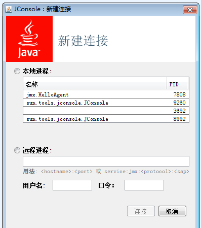
2、双击打开我们的本地进程：HelloAgent：
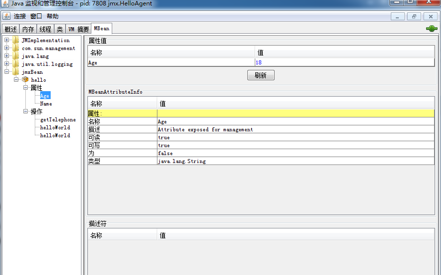
3.在这个界面上，我们可以给程序中HelloMBean的属性赋值，也可以调用其中的方法：
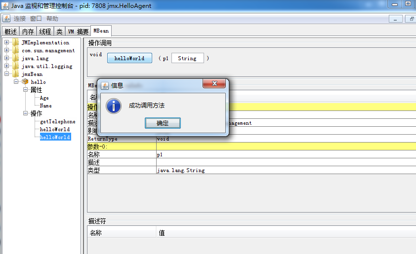
4、控制台打印如下：
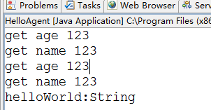
四、通过JMX提供的工具页访问
这里，我们复用上面的接口和实现类，只需要改动适配层，这里需要到导入外部jar包jdmk
package jmx;
import java.lang.management.ManagementFactory;
import javax.management.JMException;
import javax.management.MBeanServer;
import javax.management.ObjectName;
import com.sun.jdmk.comm.HtmlAdaptorServer;
public class HelloAgent
{
public static void main(String[] args) throws JMException, Exception
{
MBeanServer server = ManagementFactory.getPlatformMBeanServer();
ObjectName helloName = new ObjectName("jmxBean:name=hello");
//create mbean and register mbean
server.registerMBean(new Hello(), helloName);
ObjectName adapterName = new ObjectName("HelloAgent:name=htmladapter,port=8082");
HtmlAdaptorServer adapter = new HtmlAdaptorServer();
server.registerMBean(adapter, adapterName);
adapter.start();
}
}
我们访问地址：http://localhost:8082，点击name=hello：
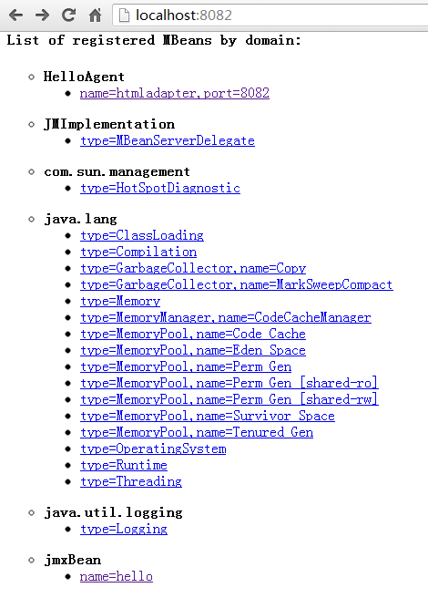
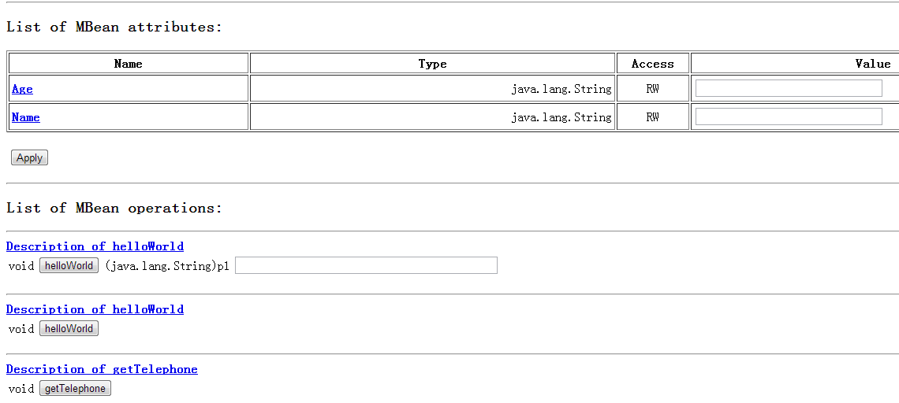
1、在这里创建一个AdaptorServer，这个类将决定MBean的管理界面，这里用最普通的Html型界面。AdaptorServer其实也是一个MBean。
2、我们可以看到这个工具页，其实与我们上一个案例中的Jconsole中的管理界面类似，都可以操作资源中的属性和方法。
五、通过客户端程序进行远程访问
1、这里需要对agent进行修改，增加ip和porta绑定部分的逻辑

package jmxTest;
import java.io.IOException;
import java.lang.management.ManagementFactory;
import java.rmi.RemoteException;
import java.rmi.registry.LocateRegistry;
import javax.management.JMException;
import javax.management.MBeanServer;
import javax.management.ObjectName;
import javax.management.remote.JMXConnectorServer;
import javax.management.remote.JMXConnectorServerFactory;
import javax.management.remote.JMXServiceURL;
public class HelloAgent
{
public static void main(String[] args) throws JMException, NullPointerException
{
MBeanServer server = ManagementFactory.getPlatformMBeanServer();
ObjectName helloName = new ObjectName("jmxBean:name=hello");
//create mbean and register mbean
server.registerMBean(new Hello(), helloName);
try
{
//这个步骤很重要，注册一个端口，绑定url后用于客户端通过rmi方式连接JMXConnectorServer
LocateRegistry.createRegistry(9999);
//URL路径的结尾可以随意指定，但如果需要用Jconsole来进行连接，则必须使用jmxrmi
JMXServiceURL url = new JMXServiceURL
("service:jmx:rmi:///jndi/rmi://localhost:9999/jmxrmi");
JMXConnectorServer jcs = JMXConnectorServerFactory.newJMXConnectorServer(url, null, server);
System.out.println("begin rmi start");
jcs.start();
System.out.println("rmi start");
}
catch (RemoteException e)
{
e.printStackTrace();
}
catch (IOException e)
{
e.printStackTrace();
}
}
}
写到这里，如果没有client进行远程连接，可以使用Jconsole进行远程访问：
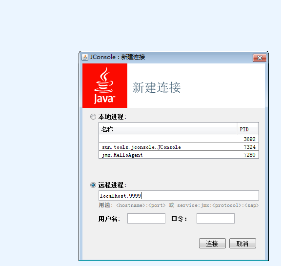
2、客户端Client程序，用于与agent进行远程连接：
1 package jmx;
2
3 import java.io.IOException;
4
5 import javax.management.Attribute;
6 import javax.management.MBeanServerConnection;
7 import javax.management.MBeanServerInvocationHandler;
8 import javax.management.ObjectName;
9 import javax.management.remote.JMXConnector;
10 import javax.management.remote.JMXConnectorFactory;
11 import javax.management.remote.JMXServiceURL;
12
13
14 public class Client
15 {
16 public static void main(String[] args) throws IOException, Exception, NullPointerException
17 {
18 JMXServiceURL url = new JMXServiceURL
19 ("service:jmx:rmi:///jndi/rmi://localhost:9999/jmxrmi");
20 JMXConnector jmxc = JMXConnectorFactory.connect(url,null);
21
22 MBeanServerConnection mbsc = jmxc.getMBeanServerConnection();
23 //ObjectName的名称与前面注册时候的保持一致
24 ObjectName mbeanName = new ObjectName("jmxBean:name=hello");
25
26 System.out.println("Domains ......");
27 String[] domains = mbsc.getDomains();
28
29 for(int i=0;i<domains.length;i++)
30 {
31 System.out.println("doumain[" + i + "]=" + domains[i] );
32 }
33
34 System.out.println("MBean count = " + mbsc.getMBeanCount());
35 //设置指定Mbean的特定属性值
36 //这里的setAttribute、getAttribute操作只能针对bean的属性
37 //例如对getName或者setName进行操作，只能使用Name，需要去除方法的前缀
38 mbsc.setAttribute(mbeanName, new Attribute("Name","杭州"));
39 mbsc.setAttribute(mbeanName, new Attribute("Age","1990"));
40 String age = (String)mbsc.getAttribute(mbeanName, "Age");
41 String name = (String)mbsc.getAttribute(mbeanName, "Name");
42 System.out.println("age=" + age + ";name=" + name);
43
44 HelloMBean proxy = MBeanServerInvocationHandler.
45 newProxyInstance(mbsc, mbeanName, HelloMBean.class, false);
46 proxy.helloWorld();
47 proxy.helloWorld("migu");
48 proxy.getTelephone();
49 //invoke调用bean的方法，只针对非设置属性的方法
50 //例如invoke不能对getName方法进行调用
51 mbsc.invoke(mbeanName, "getTelephone", null, null);
52 mbsc.invoke(mbeanName, "helloWorld",
53 new String[]{"I'll connect to JMX Server via client2"}, new String[]{"java.lang.String"});
54 mbsc.invoke(mbeanName, "helloWorld", null, null);
55 }
56 }
a、在35到41行，是对属性进行赋值和取值，这里我们不能直接调用方法，而是通过setAttribute、getAttrubute方法来进行操作，则属性的首字母要大写。
b、对资源里面的方法进行操作有两种方式：一是通过代理直接调用方法；二是通过JAVA的反射注入的方式进行方法的调用。
下面我们来看看执行结果，先执行agent，再执行客户端：
c、client的控制台打印结果：
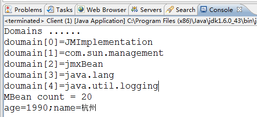
d、agent控制台打印结果：
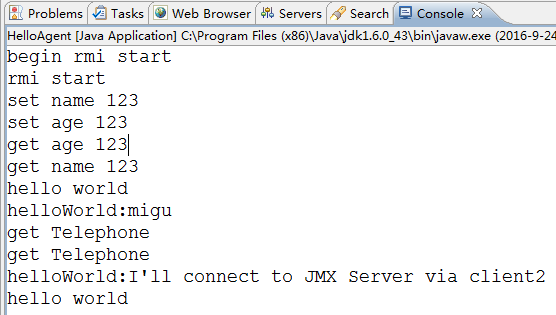
六、Notification
MBean之间的通信是必不可少的，Notification就起到了在MBean之间沟通桥梁的作用。JMX 的通知由四部分组成：
1、Notification这个相当于一个信息包，封装了需要传递的信息
2、Notification broadcaster这个相当于一个广播器，把消息广播出。
3、Notification listener 这是一个监听器，用于监听广播出来的通知信息。
4、Notification filiter 这个一个过滤器，过滤掉不需要的通知。这个一般很少使用。
这里我们使用日常打招呼的场景：jack与我偶遇，jack说：hi；我礼貌的回答：hello，jack。
这里我们先分别创建两个资源：
package jmx;
/*
* 该类名称必须与实现的接口的前缀保持一致（即MBean前面的名称
*/
public class Hello implements HelloMBean
{
private String name;
public String getName()
{
return name;
}
public void setName(String name)
{
this.name = name;
}
public void printHello()
{
System.out.println("Hello World, " + name);
}
public void printHello(String whoName)
{
System.out.println("Hello , " + whoName);
}
}
package jmx;
/*
* 接口名必须以MBean结尾
*/
public interface HelloMBean
{
public String getName();
public void setName(String name);
public void printHello();
public void printHello(String whoName);
}
package jmx;
import javax.management.Notification;
import javax.management.NotificationBroadcasterSupport;
public class Jack extends NotificationBroadcasterSupport implements JackMBean
{
private int seq = 0;
public void hi()
{
//创建一个信息包
Notification notify =
//通知名称；谁发起的通知；序列号；发起通知时间；发送的消息
new Notification("jack.hi",this,++seq,System.currentTimeMillis(),"jack");
sendNotification(notify);
}
}
package jmx;
public interface JackMBean
{
public void hi();
}
这里的类Jack不仅实现了MBean接口，还继承了NotificationBroadcasterSupport。jack在这里创建并发送了一个消息包。
package jmx;
import javax.management.Notification;
import javax.management.NotificationListener;
public class HelloListener implements NotificationListener
{
public void handleNotification(Notification notification, Object handback)
{
if(handback instanceof Hello)
{
Hello hello = (Hello)handback;
hello.printHello(notification.getMessage());
}
}
}
package jmx;
import java.lang.management.ManagementFactory;
import javax.management.JMException;
import javax.management.MBeanServer;
import javax.management.ObjectName;
public class HelloAgent
{
public static void main(String[] args) throws JMException, Exception
{
MBeanServer server = ManagementFactory.getPlatformMBeanServer();
ObjectName helloName = new ObjectName("yunge:name=Hello");
Hello hello=new Hello();
server.registerMBean(hello, helloName);
Jack jack = new Jack();
server.registerMBean(jack, new ObjectName("jack:name=Jack"));
jack.addNotificationListener(new HelloListener(), null, hello);
Thread.sleep(500000);
}
}
我们用Jconsole来进行访问：
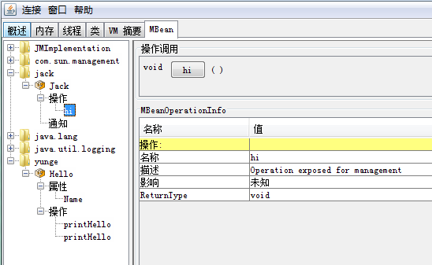
这里我们可以看到有两个MBean，一个是yunge，一个是jack。我们执行jack的hi方法后，去看下控制台上的打印信息；
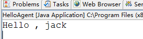
七、linux下利用JMX监控Tomcat
利用JMX监控Tomcat，就是相当于部署在tomcat上的应用作为服务端，也就是被管理资源的对象。然后通过程序或者jconsole远程连接到该应用上来。远程连接需要服务器端提供ip和port。如果需要加密访问的话，还需要配置用户名、密码等参数。
主要是在tomcat下的文件catalina.sh中进行一些环境变量的配置配置：
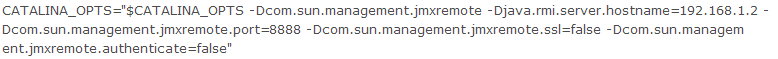
-Dcom.sun.management.jmxremote=true 相关 JMX 代理侦听开关
-Djava.rmi.server.hostname 服务器端的IP
-Dcom.sun.management.jmxremote.port=29094 相关 JMX 代理侦听请求的端口
-Dcom.sun.management.jmxremote.ssl=false 指定是否使用 SSL 通讯
-Dcom.sun.management.jmxremote.authenticate=false 指定是否需要密码验证
这样就可以通过客户端或者jconsole对tomcat进行监控。